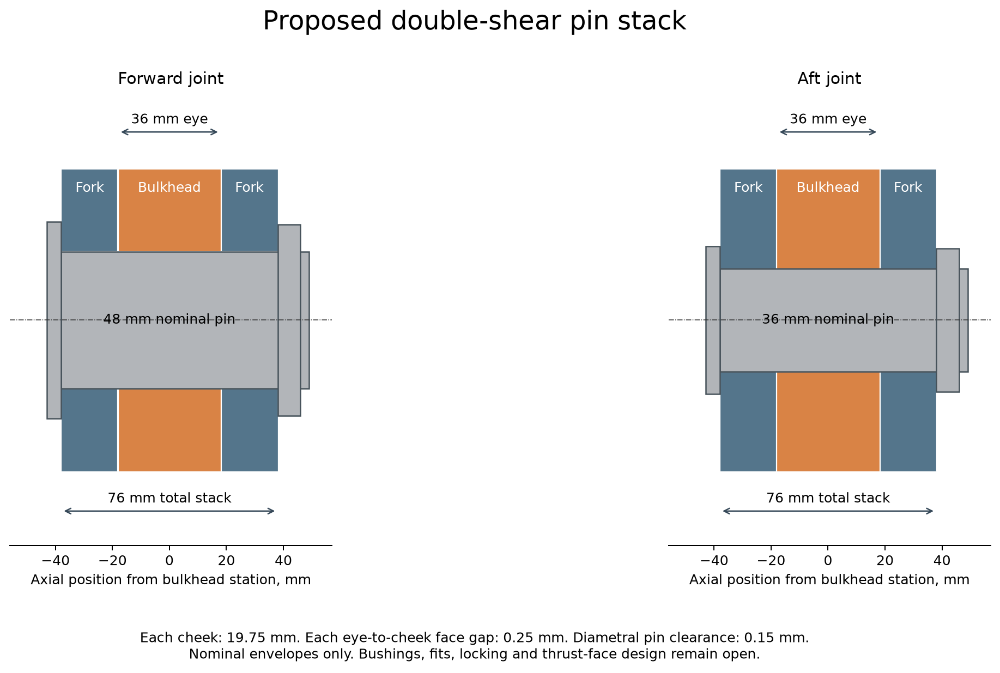
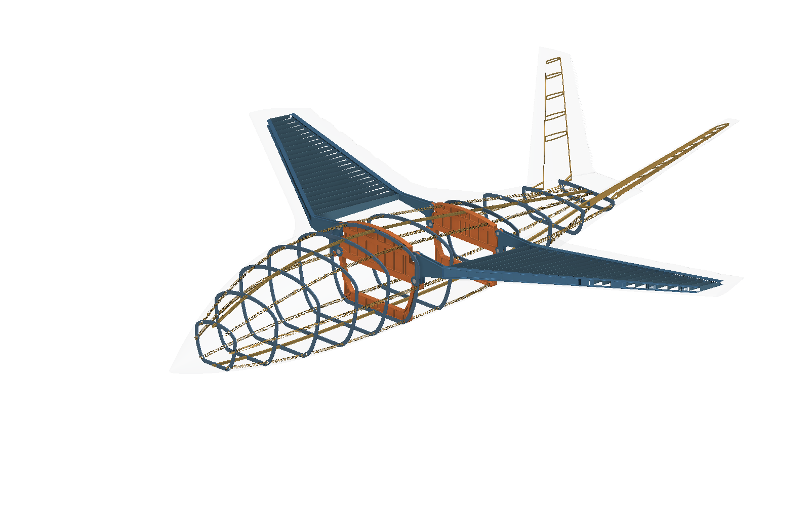
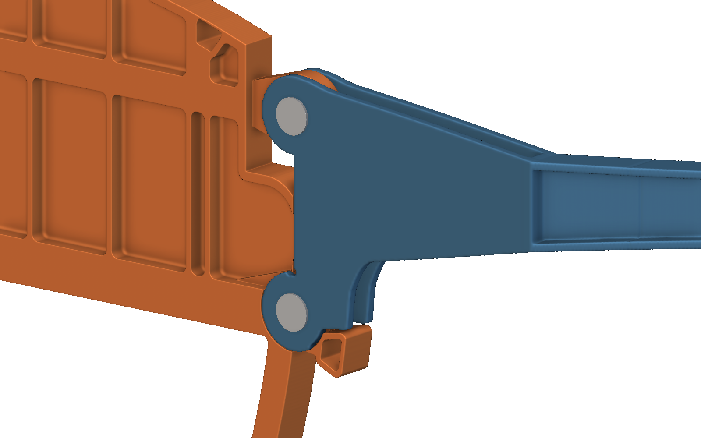
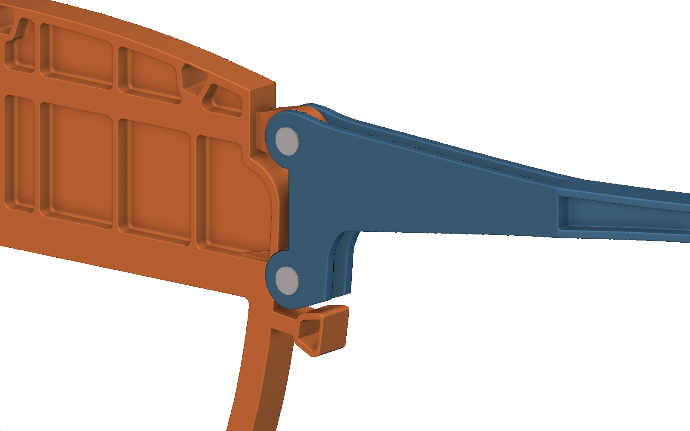
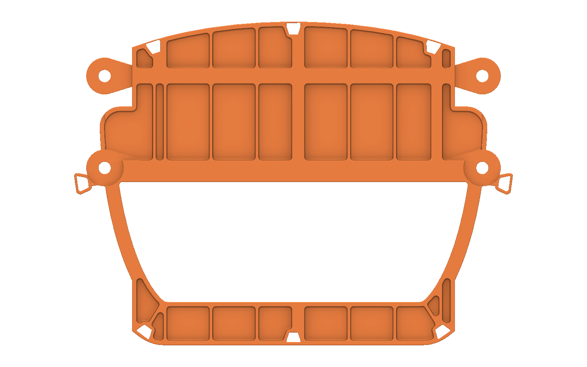
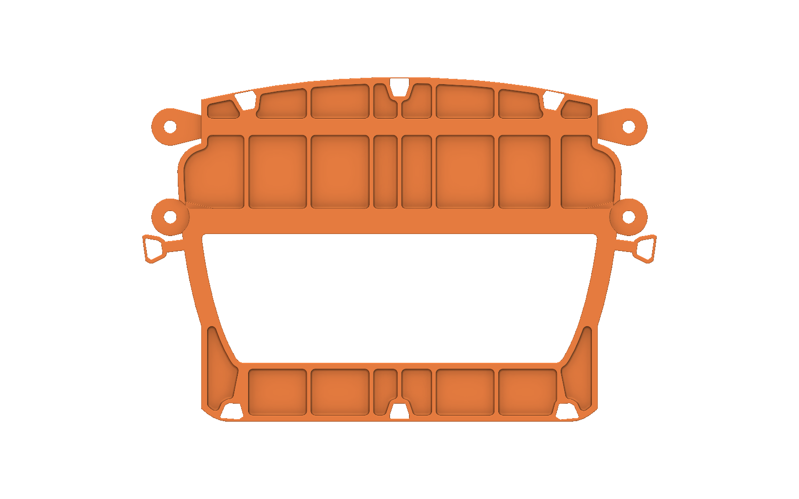
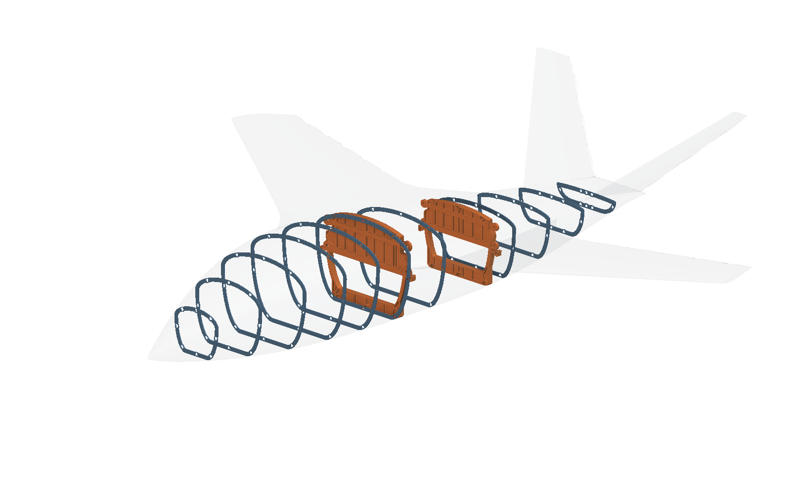
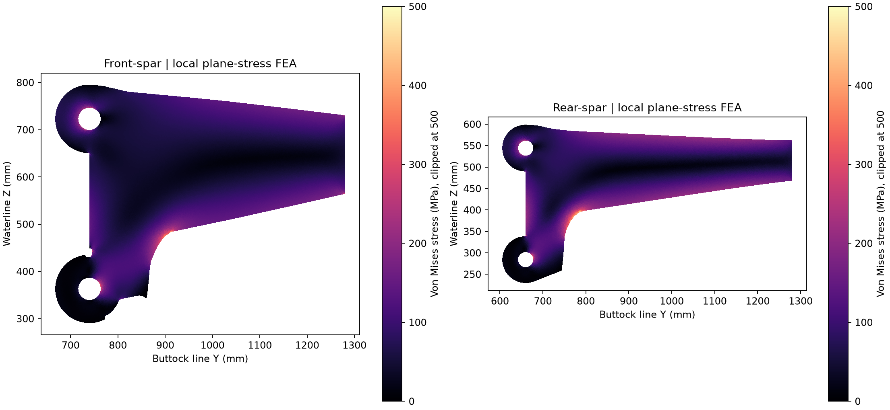

Bulkheads with local spar attachments
Revision G develops the supplied attachment reference into native bulkhead and spar models.
01Bring the joint into the bulkhead
The reference shows localized eyes at the upper and lower bulkhead load paths. The new model uses integral eyes and paired fork cheeks. Each spar root has two pins. Continuous bulkhead ribs connect the eyes inward.
The new attachment geometry is built and checked in nTop. Nominal pin and eye screens pass. Local fork stresses still exceed the study ceiling.
The first small-eye trial failed. Wider vertical spacing and larger pins improved the nominal joint checks. The fork transition and the overall structure need further analysis and design.
The source reference image is omitted from this public edition. The recorded design discussion is retained.
| Feature | Forward primary | Aft primary |
|---|---|---|
| Fuselage station (source-derived proposal) | 4,083.306 mm | 5,795.737 mm |
| Attachment buttock line (proposed) | +/-740 mm | +/-660 mm |
| Pin center spacing (proposed) | 360 mm | 260 mm |
| Nominal pin diameter (proposed) | 48 mm | 36 mm |
| Eye thickness / fork cheek (proposed) | 36 / 19.75 mm | 36 / 19.75 mm |
| Pin bore / face gap (proposed) | 48.15 mm / 0.25 mm | 36.15 mm / 0.25 mm |

The outboard spar directions retain the measured 35.075-degree front and 15.165-degree rear sweep. Internal root transitions connect those spars to the deeper attachment positions. These transitions change the local load path and need a new shell/contact analysis.
Cover and stringer forces retain the separate cover-splice path. The model removes 176 obsolete cap/web fasteners and their cap or web splice stock. It adds eight nominal pins and retains 952 cover fasteners.
02Native model and connection views






03Local screening loads and limitations
Loads come from the retained edge-aligned, massless-link beam cases: +3.8 g, -1.5 g and a 70/30 rolling split. The screen recovers cap and web forces. It adds the inboard shear lever arm. It applies 1.5 for ultimate load and 1.25 for unequal sharing, once each.
Two pins resolve the group force and the moments about X and Y. The residual moment about Z needs restraint from the closed cover box. The model does not establish that restraint or its flexibility. Axial pin-direction loads require contact at the proposed thrust faces.
| Screen | Lowest reserve factor (calculated) | Study ceiling |
|---|---|---|
| pin combined | 1.374 | 600 MPa steel combined stress |
| eye bearing | 1.946 | 300 MPa aluminum bearing |
| fork bearing | 2.136 | 300 MPa aluminum bearing |
| eye net | 3.239 | 250 MPa aluminum net section |
| eye shear out | 1.943 | 150 MPa aluminum shear |
| eye neck | 2.027 | 250 MPa aluminum neck |
| thrust average | 52.595 | 150 MPa average contact pressure |
These are unvalidated material ceilings and nominal geometry checks. Lug efficiency, stress concentration, pin contact, prying, slip, fork buckling and fatigue are unresolved. A reserve above one does not release the joint.
Pin bending uses a symmetric double-shear beam with distributed eye and cheek bearing. The formula is M = P(t_eye/8 + gap/2 + t_cheek/4). The screen combines bending and average double-shear stress. It does not replace contact analysis.
The general attachment and fastener references are the FAA Airframe Handbook and NASA Fastener Design Manual, RP-1228. They do not supply approval or joint-specific allowables for this model.

| Fork / mesh target | Peak outside the fixed 50 mm root zone | Study ceiling |
|---|---|---|
| Front-spar / 12 mm | 374.1 MPa | 250 MPa |
| Front-spar / 6 mm | 381.9 MPa | 250 MPa |
| Front-spar / 3 mm | 410.7 MPa | 250 MPa |
| Rear-spar / 12 mm | 389.4 MPa | 250 MPa |
| Rear-spar / 6 mm | 443.4 MPa | 250 MPa |
| Rear-spar / 3 mm | 462.3 MPa | 250 MPa |
The loaded half of each hole receives radial bearing tractions. The outboard edge is fixed. The solve includes the same ultimate load and 1.25 distribution multiplier as the nominal screen. Results without that additional multiplier scale by 0.8 in this linear model. Both fine-mesh stress screens still fail at that scale.
Mesh refinement increases the local peaks. The tangent outlines remove the visible hooks. Their source-constrained root transitions still concentrate stress. These linear peaks do not predict post-yield behavior. X loads, contact, lateral buckling and three-dimensional transition fillets are not solved.
04This revision is not a demonstrated weight reduction
The main bulkhead stock remains 76 mm with 10 mm residual pocket floors. The fork cheeks remain solid 19.75 mm stock. These gauges preserve a comparison for further analysis. They are not a minimum-weight result.
| Part / scope | Prior mass | Revision G mass or addition |
|---|---|---|
| C-Fwd | 116.03 kg | 116.73 kg (calculated) |
| C-Aft | 89.80 kg | 84.27 kg (calculated) |
| Four new fork roots | Not present | +64.23 kg of stock |
New primary masses use section integration of the shared native construction at 2,830 kg/m3. The final 12-to-24-point quadrature change is below 0.001 percent for each primary. This is a calculated geometry mass, not a new native mass measurement or STEP measurement.
The table excludes removed splice stock, restored material in old spar holes, pin hardware and the unchanged airframe. It is not a complete assembly weight comparison. Fork pocketing and thinner bulkhead floors need a compatible shell model and validated attachment loads.
The preceding sizing audit still applies. Its artificial coupling mass correction is not physical weight removal. Its rib-load error and native-section stiffness mismatch prevent a claim of overall structural adequacy.
05Native files, checks and reproduction
| Evidence | Result |
|---|---|
| Native geometry probes | 1,997 passed on two primaries and four spars |
| Pin/fork pilot | 45 probes passed; two pin diameter inputs checked |
| Assembly graph | 174 imported definitions; complete expressions and input defaults match |
| Native GUI | All 128 checked variables report e_OK |
| Part organization | Separate native notebooks; embedded custom definitions in the main assembly |
| Manufacturing state | Pocket rolling-ball geometry checked. Lug-root fillets, fits, threads, retention and process definition remain open |
Open Revision G assembly / Forward bulkhead / Aft bulkhead / Assembly manifest
Port front spar / Starboard front spar / Port rear spar / Starboard rear spar / Nominal pin family / Reproduction and editing guide
Local load and strength screen / Fork finite-element analysis / Mass and clearance calculations / Complete native graph verification / Retained failed small-eye trial
All 1,344 sampled root and bulkhead points remain inside the source envelope. The smallest sampled reserve is 7.824 mm. All 952 retained cover holes remain inside the new splice trimming boundary. The smallest bore-edge reserve to that boundary is 12.755 mm. These finite geometry checks do not establish joint strength or global minimum clearance.
Native source-containment samples / Retained cover-hole trim checks
Regenerate the shared geometry and joint table with lug_revision_geometry.py. Run lug_revision_analysis.py, then lug_revision_tangent_forks.py --install. Recompute the mass and fork FEA. Build changed parts with lug_revision_native.py or the verified GUI-template authoring route. Refresh the assembly from the verified saved definitions. Imported custom blocks are snapshots, so saving a separate part alone does not update the main assembly.
No new STEP is claimed for Revision G. Prior STEP files remain tied to their prior revisions. Final machining details require approved material/temper, tolerances, cutter access, local root fillets and a selected pin/bushing/retention system.